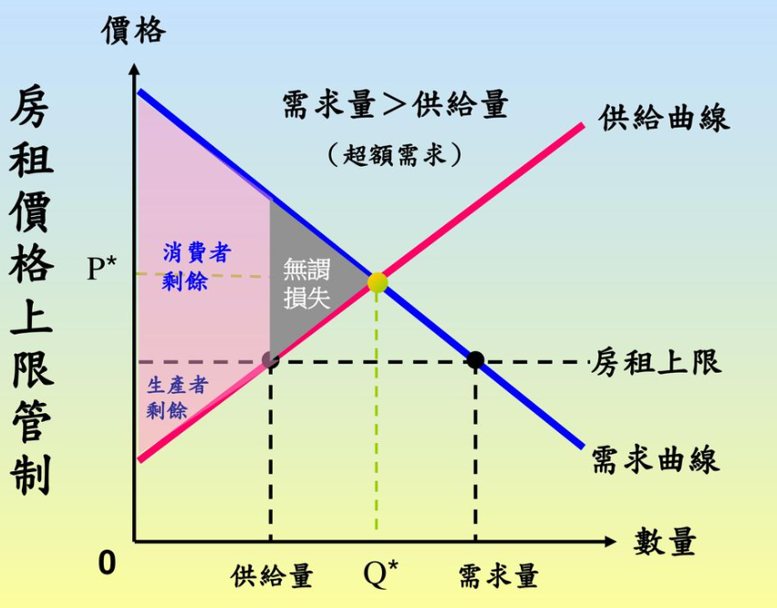
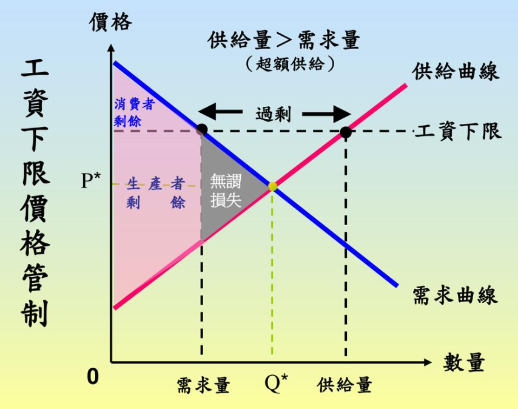
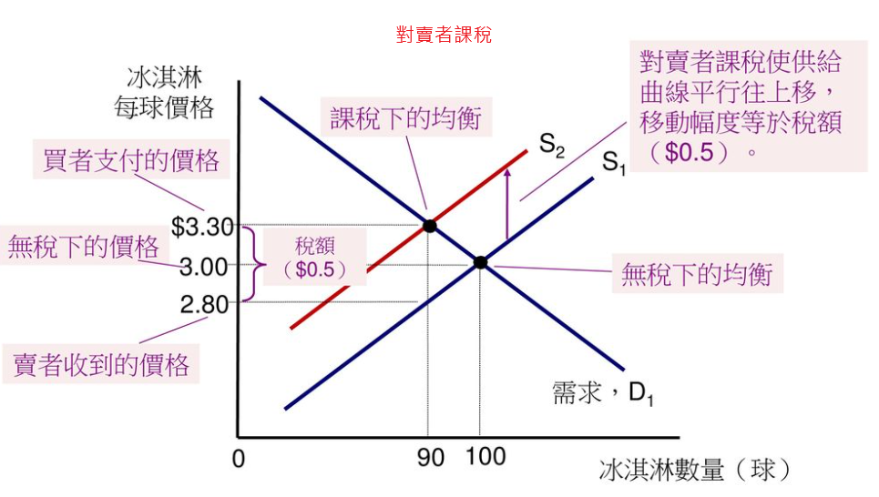
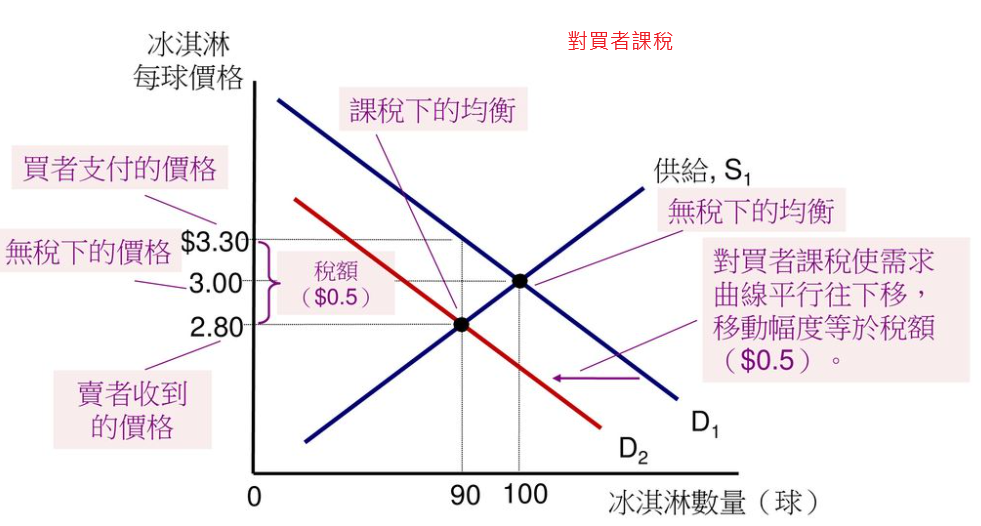
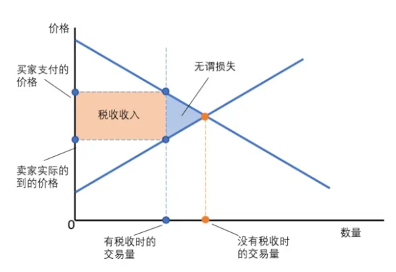
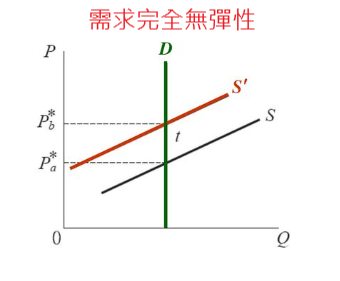
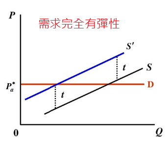
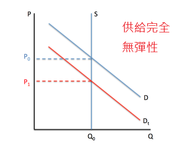
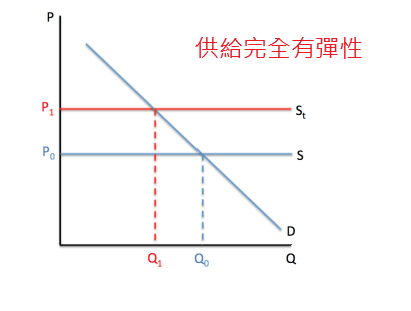
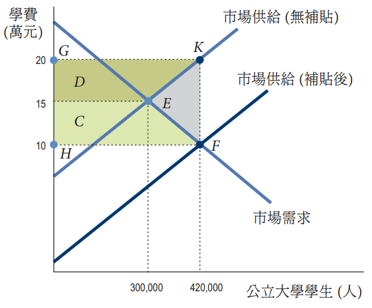

陳杰龍的筆記網站
陳杰龍的筆記網站 主頁
主頁 歸檔
歸檔 分類
分類 其他
其他 關於我
關於我 6.政府政策對市場的影響
6.政府政策對市場的影響
筆記說明
此筆記用途在於國立屏東大學資訊管理系大三上經濟學重點整理
並非所有人都適用
如果有侵犯到版權的問題在聯繫我，再聯絡我，我在移除
並非所有人都適用
如果有侵犯到版權的問題在聯繫我，再聯絡我，我在移除
適用房租上限的租屋市場
- 價格上限是一項商品或服務的法定最高售價，超過則違法
- 適用租屋市場的價格上限稱為房租上限
- 低於均衡房租的房租上限會造成：
- 租屋短缺
- 黑市交易
- 無謂損失

適用最低工資的勞動市場
- 價格下限是一項商品或服務的法定最低售價，低於則違法
- 適用勞動市場的價格下限稱為最低工資(基本薪資)
- 高於均衡薪資的最低工資會造成：
- 失業
- 無謂損失

政府課稅
- 稅負歸屬是稅的負擔再買者與賣者之間的分配
- 對買者或賣者課稅都是一樣的結果

 - 課稅下的無謂損失
 - 需求完全無彈性 -- 稅全部由買者負擔(無無謂損失)
需求完全有彈性 -- 稅全部由賣者負擔(有無謂損失)
  - 供給完全無彈性 -- 稅全部由賣者負擔(無無謂損失)
供給完全有彈性 -- 稅全部由買者負擔(有無謂損失)
 
生產補貼
- 生產補貼是政府對生產者所支付的款項
- 影響
- 供給增加
- 價格下跌且產量增加
- 邊際成本增加
- 政府對農民的支付增加
- 無效率的過度生產
